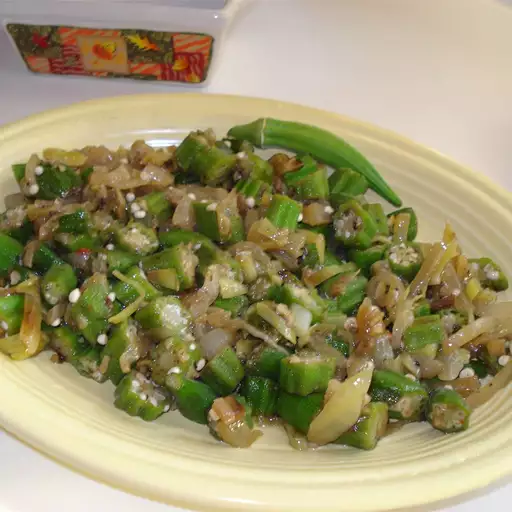

Easy Indian-Style Okra

Description
This okra is delicious.
Ingredients
- 3 tablespoons butter
- 1 medium onion, chopped
- 1 pound sliced fresh okra
- ½ teaspoon ground cumin
- ½ teaspoon ground ginger
- ½ teaspoon ground coriander
- ¼ teaspoon ground black pepper
- salt to taste
Steps
- Melt butter in a large skillet over medium heat. Add onion and cook until tender. Stir in okra and season with cumin, ginger, coriander, pepper, and salt.
- Cook and stir for a few minutes, then reduce the heat to medium-low and cover the pan. Cook, stirring occasionally, until okra is tender, about 20 minutes.